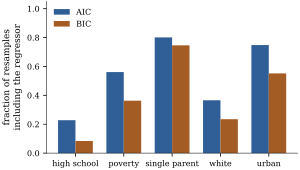

29.4 All subsets and stepwise search
With
29.4.1. Searching all subsets
The search splits into two stages, because every criterion based on the residual sum of squares agrees within a size.
Among candidates with the same number of columns
Proof. For fixed
So it suffices to find, for each size, the subset
with the smallest residual sum of squares, and then
compare the
Visiting all
29.4.2. Branch and bound
The key fact is that removing columns never reduces
the residual sum of squares: if
Organize the subsets as a tree. The root is the full
set
Let
Proof. A descendant
The same bound works for AIC, BIC or the best subset
of each size. Furnival and Wilson (1974) combined bounds
of this kind with an efficient order of sweeps in the
“leaps and bounds” algorithm, which handles
Take
import itertools
import numpy as np
rng = np.random.default_rng(2908)
n, m = 100, 15
X = rng.normal(size=(n, m))
beta = np.r_[1.0, -0.8, 0.6, 0.4, 0.3, np.zeros(m - 5)]
y = 2 + X @ beta + rng.normal(size=n)
Xc, yc = X - X.mean(axis=0), y - y.mean() # centring accounts for the intercept
G, g = Xc.T @ Xc, Xc.T @ yc
def sse(S):
S = list(S)
if not S:
return yc @ yc
return yc @ yc - g[S] @ np.linalg.solve(G[np.ix_(S, S)], g[S])
s2 = sse(range(m)) / (n - m - 1)
def cp(S):
return sse(S) / s2 - n + 2 * (len(S) + 1)
def branch_and_bound():
"""Children delete a column with a larger index than the last one deleted, so every
subset is visited at most once; a node is not expanded when no descendant can win."""
best = [np.inf, None]
count = [0]
def visit(S, last):
e = sse(S)
count[0] += 1
value = e / s2 - n + 2 * (len(S) + 1)
if value < best[0]:
best[:] = [value, S]
forced = [j for j in S if j <= last] # kept by every descendant
if e / s2 - n + 2 * (len(forced) + 1) >= best[0]:
return # SSE only grows as columns go
for j in S:
if j > last:
visit(tuple(k for k in S if k != j), j)
visit(tuple(range(m)), -1)
return best[1], best[0], count[0]
S_bb, cp_bb, fits = branch_and_bound()
print("branch and bound:", S_bb, round(cp_bb, 3), "after", fits, "fits of", 2**m)29.4.3. Stepwise search
Stepwise methods give up the guarantee of finding the
best subset in exchange for examining only
Let the current subset be
(a) Forward selection starts from the intercept alone. At each step it adds the column
(b) Backward elimination starts from the full model. At each step it removes the column
(c) Stepwise regression (Efroymson 1960) alternates: after each forward step it removes any column whose
The thresholds may be replaced by a criterion: add or
remove the column that lowers AIC (or
The single step of forward selection can be described in several equivalent ways, all of them versions of the Frisch–Waugh–Lovell theorem.
Let
(a)
(b) For
Proof.
- (a) By Theorem 6.6.2(b), the
residual vector of the model
- (b) Apply (a) to the
model
Criterion-based stopping is therefore threshold-based
stopping with a particular threshold: forward selection
by AIC adds a column iff its
For the state data, forward selection by AIC adds
single parenthood and then urbanization and stops.
Backward elimination by AIC removes white, high school,
poverty (in that order) and stops at the same two
regressors, which are also the all-subsets AIC choice.
Forward and backward computed the criterion for
Take
import itertools
import numpy as np
rng = np.random.default_rng(2909)
n2 = 60
z = rng.normal(size=(n2, 3))
x1 = z[:, 0]
x2 = 0.95 * z[:, 0] + np.sqrt(1 - 0.95**2) * z[:, 1] # corr(x1, x2) about 0.95
x3 = z[:, 2]
Xf = np.column_stack([x1, x2, x3])
yf = 3 * (x1 - x2) + 0.4 * x3 + rng.normal(size=n2) # the signal is in x1 - x2
def rss(cols):
A = np.column_stack([np.ones(n2)] + [Xf[:, j] for j in cols])
b, *_ = np.linalg.lstsq(A, yf, rcond=None)
return np.sum((yf - A @ b) ** 2)
first = min(range(3), key=lambda j: rss([j]))
second = min((j for j in range(3) if j != first), key=lambda j: rss([first, j]))
best_pair = min(itertools.combinations(range(3), 2), key=rss)
print("forward chooses", sorted([first, second]), "RSS", round(rss([first, second]), 1))
print("best pair ", list(best_pair), "RSS", round(rss(best_pair), 1))Collinear regressors are exactly where this happens:
a contrast between them can be highly predictive while
each member is not (Chapter 26
describes such directions through the eigenvectors of
29.4.4. Comparing the procedures
Take
Weak slopes:
| procedure | loss | Pr(true) | size |
|---|---|---|---|
| least squares, all eight | 8.98 | 0.00 | 8.00 |
| true subset (oracle) | 3.97 | 1.00 | 3.00 |
| all subsets, AIC | 7.81 | 0.18 | 3.42 |
| all subsets, BIC | 7.33 | 0.18 | 2.52 |
| all subsets, leave-one-out | 7.76 | 0.19 | 3.34 |
| forward, AIC | 7.70 | 0.19 | 3.34 |
| backward, AIC | 7.89 | 0.17 | 3.50 |
Strong slopes:
| procedure | loss | Pr(true) | size |
|---|---|---|---|
| least squares, all eight | 9.02 | 0.00 | 8.00 |
| true subset (oracle) | 4.06 | 1.00 | 3.00 |
| all subsets, AIC | 7.27 | 0.37 | 3.93 |
| all subsets, BIC | 6.17 | 0.70 | 3.20 |
| all subsets, leave-one-out | 7.17 | 0.39 | 3.85 |
| forward, AIC | 7.16 | 0.39 | 3.86 |
| backward, AIC | 7.35 | 0.35 | 3.98 |
Every selection rule beats least squares on all eight
regressors, whose expected loss is
The simulation illustrates Proposition 29.2.4 in a finite sample: where a small true model exists and its effects are large, BIC wins; with many small effects the comparison tilts towards AIC and cross-validation.
29.4.5. Instability
A procedure is unstable if small changes in the data change its output a great deal. Subset selection is a discontinuous function of the data: a column is in or out. Breiman (1996b) showed that this instability inflates the variance of the predictions that follow, and that averaging over perturbed data sets can reduce it.
Resample the

import itertools
from collections import Counter
import numpy as np
import statsmodels.api as sm
data = sm.datasets.statecrime.load_pandas().data.drop(index="District of Columbia")
names = ["hs_grad", "poverty", "single", "white", "urban"]
y_all = np.log(data["violent"].to_numpy())
Z_all = data[names].to_numpy()
n = len(y_all)
subsets = [S for k in range(6) for S in itertools.combinations(range(5), k)]
def select(Z, y, penalty):
def crit(S):
X = np.column_stack([np.ones(len(y)), Z[:, list(S)]])
b, *_ = np.linalg.lstsq(X, y, rcond=None)
return n * np.log(np.sum((y - X @ b) ** 2) / n) + penalty * (len(S) + 2)
return min(subsets, key=crit)
rng = np.random.default_rng(2911)
B = 200 # the book's figure uses 1000
chosen = {"AIC": Counter(), "BIC": Counter()}
for _ in range(B):
idx = rng.integers(0, n, size=n) # resample whole states
chosen["AIC"][select(Z_all[idx], y_all[idx], 2.0)] += 1
chosen["BIC"][select(Z_all[idx], y_all[idx], np.log(n))] += 1
for crit, counts in chosen.items():
print(crit, "distinct models:", len(counts))
for S, c in counts.most_common(3):
print(" ", [names[j] for j in S], c / B)Instability is a property of the question as much as
of the method. The three models favoured by the criteria
and the bootstrap (single parenthood alone, with
urbanization, and with poverty and urbanization) predict
almost equally well (their leave-one-out errors in Example (Cross-validating the state regressions)
lie between
29.4.6. Exercises
A. Check your understanding
How many subsets must exhaustive search examine for
B. Practice
Show that in the tree of Proposition 29.4.2
every subset of
Solution. A subset
In stepwise regression, show that the column just
entered has
Solution. After
Show that a column’s
C. Going deeper
In Example (A pair that forward selection cannot find),
show that the best subset of size one is
Solution. Among single columns the
residual sum of squares is smallest for the largest
squared correlation with